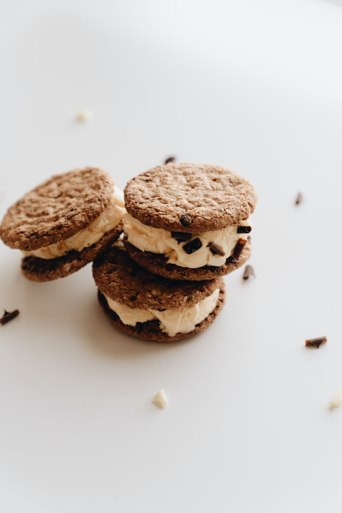
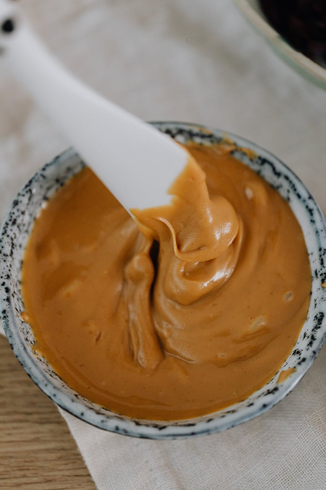
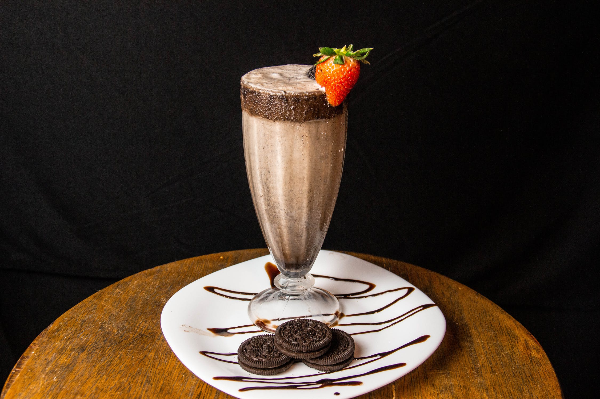
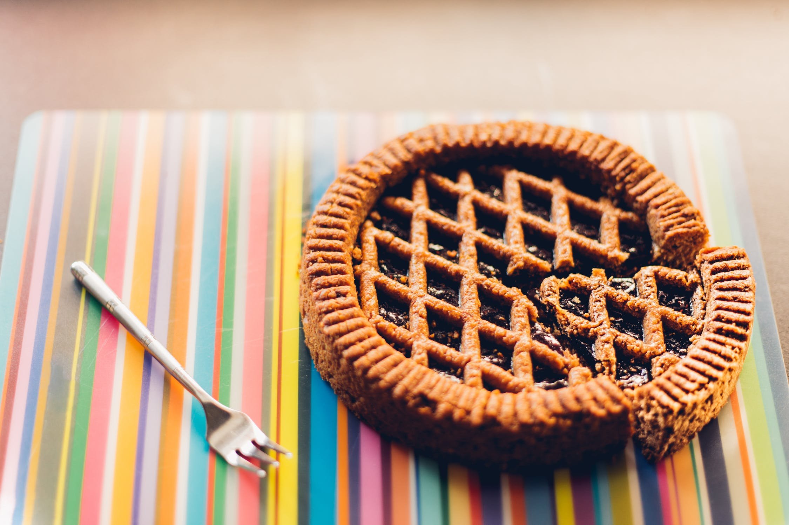
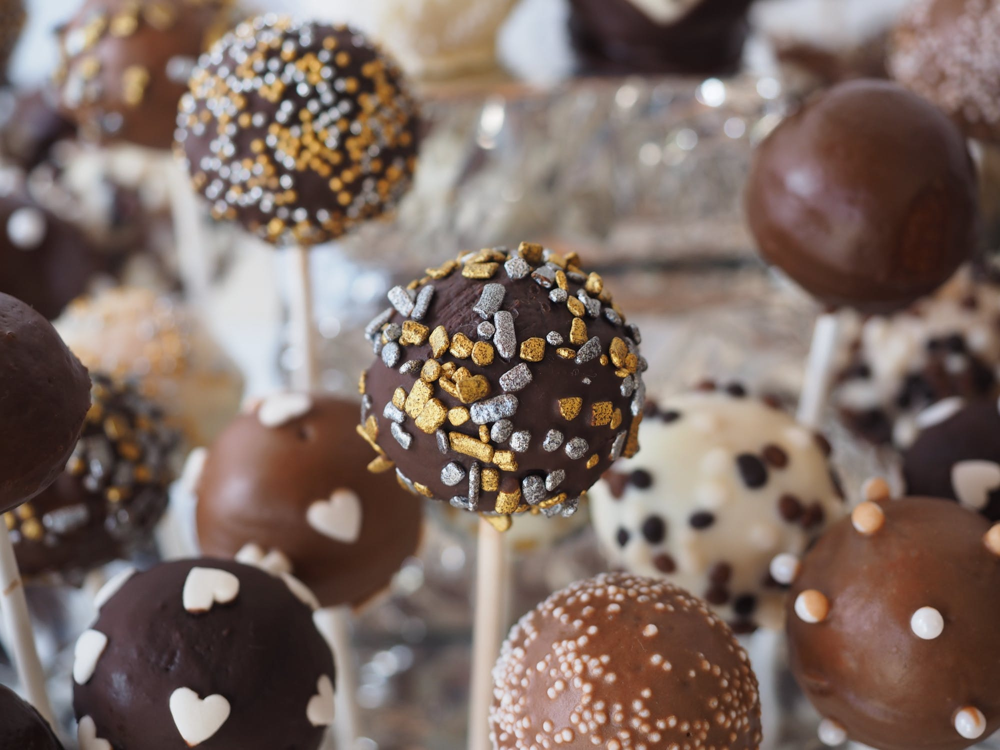

We do not sell anything other than cookies, but we do have a few ideas for you if you're looking to step up your cookie game. Order some of our cookies and try some of these recipes to switch things up a little bit!
Ice Cream Cookie Sandwich
Take two of our cookies, smush some ice cream in the between them and eat fast! Any flavor of cookie and ice cream will do. Get creative!

Cookie Butter
This is a fun one. Put leftover cookies (peanut butter, sugar, snickerdoodle, etc.) in a food processor with heavy cream, brown sugar, and melted butter. You'll get a smooth, butter-like mixture that is great spread on toast or eaten by the spoonful.

Milkshakes
Take a cookie or two, add some ice cream, and blend. Easy and delicious! Experiment with cookie and ice cream flavors and see what you can come up with.

Pie Crust
Use your leftover cookies to create a tasty cookie crumb pie crush. Crush your cookies, combine with a little butter, and press into a greased pie plate. From here, you can fill your crust with any number of fillings.

Cake Pops... but with Cookies!
Combine cookie crumbs and frosting in order to make little cake balls. Dips these in melted chocolate and devour.

Check back periodically to see if we have come up with any more creations for you. Email us and let us know if you try any of these recipes with any of our cookies. We'd love to hear from you!